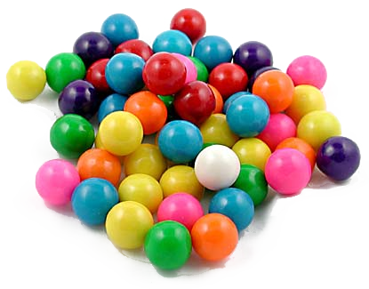
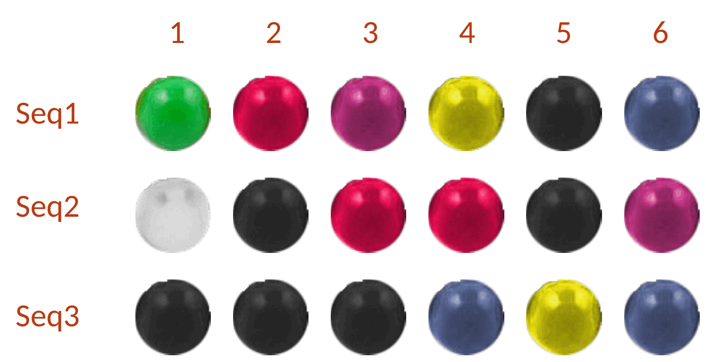
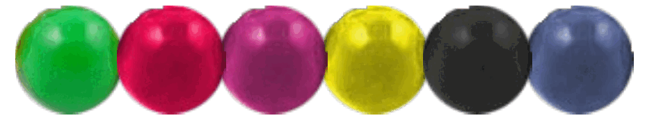

Diversity and Sampling



20* 20* 20* 20* 20* 20 = 20^6 = 6.4E7

Probability that a single member exists only once in a library:
p = number of hexamers chosen
(library size)
n = theoretical diversity
P = 1 − e−p/n= 0.99
p = n · ln(0.01) = 4.6n
Nucleic Acids Res. 1998 Feb 15;26(4):879-86. PMID: 9461443
When you construct a combinatorial library, you are not explicitly synthesizing each member of the library. You are sampling this combinatorial space randomly, so there are issues of diversity and inclusion in your library. So, in practice you need to make more library members than are actually present in the theoretical library. Let’s say I glue the 6 gumballs together into hexamers. The analogy of the gumballs is to amino acids (hence 20), or to bases (of which there are 4), or to a set of parts that could be any number. Each member of the library can be considered as the list of chosen members at each site, and here we represent that as a hexamer of gumballs glued together. How many of these random hexamers do I have to make to have a 99% probability that I have at least one of each theoretical member? Six gumballs glued into one hexamer — one library member — and the question that follows: how many must you make before you can be 99% sure every possible hexamer is in the bag?